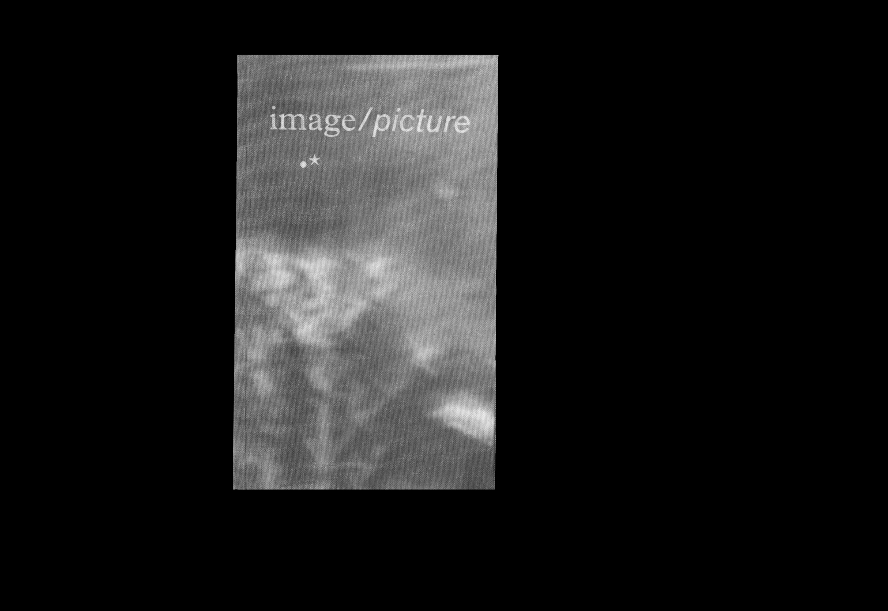
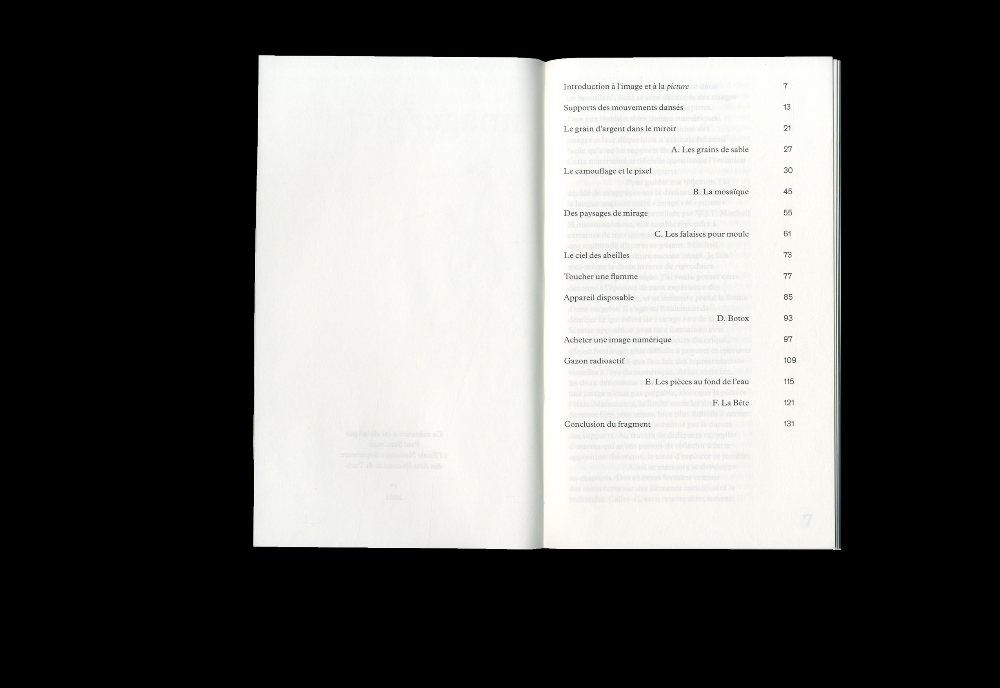
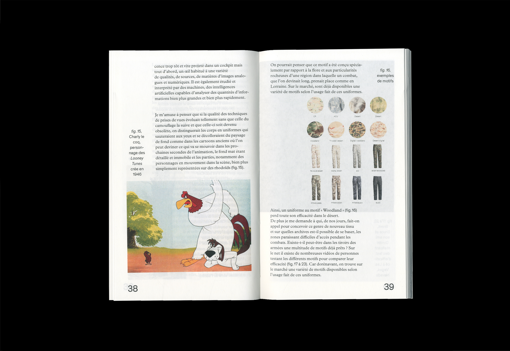
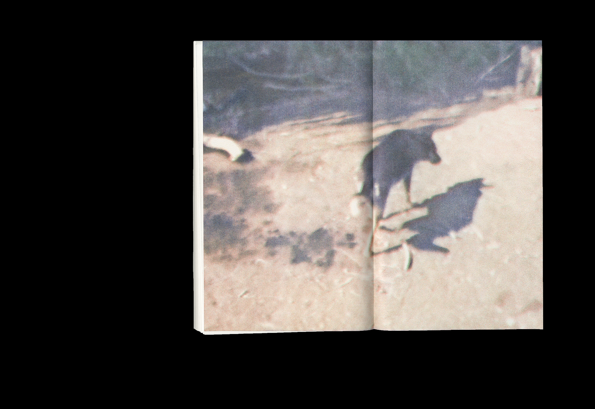

(fig.1)

(fig.2)

(fig.3)

(fig.4)

Je pense que ce mémoire (fig.1) a pris forme dans un brouillard, dont se sont découpés des nuages qui tracent les contours de mes chapitres. Face aux insaisissables images numériques, je suis souvent confuse.
Pour guider ma réflexion, j’ai décidé de m’appuyer sur la distinction qu’autorise
la langue anglaise entre « image » et « picture » telle qu’elle a été conceptualisée par W.J.T. Mitchell. Si instantanément, elle semble répondre à certaines de mes questions, aussi rapidement une multitude d’autres se posent. Mitchell décide de ne reproduire aucune image. Je fais moi-même le choix inverse de reproduire toutes celles que j’évoque. J’ai voulu penser cette découpe à l’épreuve de mon expérience des œuvres que je croise, et ce mémoire prend la forme d’une enquête. Il s’agit ici finalement de démêler ce qui relève de l’« image » ou de la « picture ». Si cette opposition peut être formalisée avec assurance dans l’ordre du discours théorique, elle est beaucoup plus difficile à prouver et éprouver dans l’expérience que l’on fait des représentations visuelles à l’ère du numérique. Avant cette ère, les deux définitions étaient simples et vérifiables : une image n’était pas palpable, alors que la picture l’était. Maintenant, la limite entre les deux est devenue bien plus ténue, bien plus difficile à cerner. Au travers de différents exemples d’œuvres qui m’ont permis de réfléchir à cette opposition théorique, je tente d’explorer ce trouble.
Ce mémoire a été dirigé par Paul Sztulman à l’École Nationale Supérieure des Arts Décoratifs de Paris durant ma quatrième année, mention très bien.